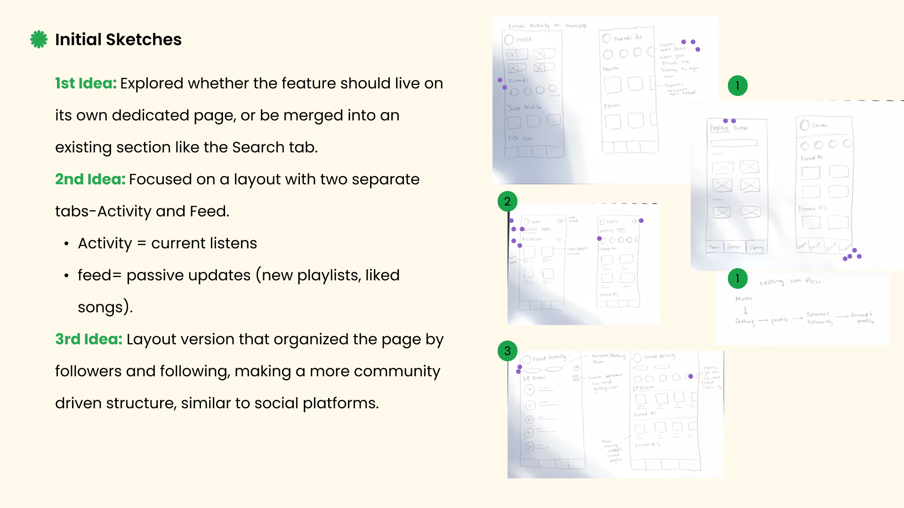
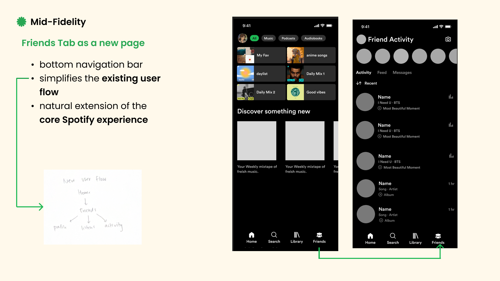
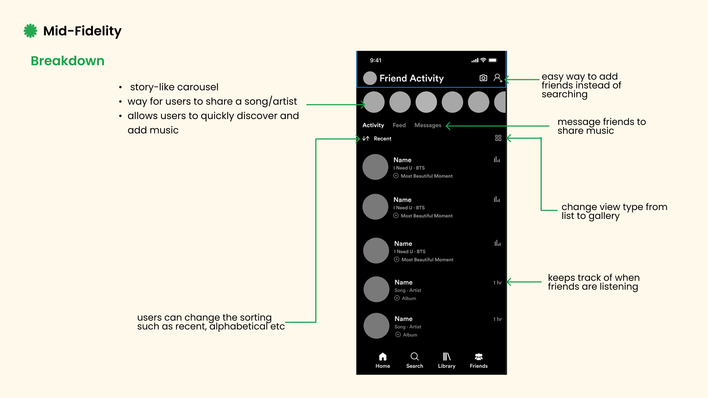

The social gap in the world's biggest music app
Spotify is the world's largest music streaming provider, yet a key feature — Friends Activity — is available exclusively on the desktop client. For the majority of Spotify's 381 million monthly active users who primarily use the mobile application, the social dimension of music discovery is missing.
As a daily user of the desktop application, I recognized the value of seeing friends' real-time listening. However, the mobile experience forces users into clumsy workarounds — sending song links via iMessage or posting updates on Instagram — just to share music.
Spotify's Friends Activity sidebar has existed on desktop for years, yet it's completely absent on mobile — where most users spend the majority of their listening time.
Validating a long-standing user pain point
To validate this issue as a significant user pain point, I began with secondary research on community posts across Reddit and Spotify's official forums. The research revealed a consistent, long-standing user frustration.
Users repeatedly asked why the Friends Activity feature wasn't available on mobile, with threads dating back years.
Many users expressed frustration with needing external apps (iMessage, Instagram) to share what they were listening to.
The missing feature was not a minor request — it was actively impeding the natural social sharing behavior of music fans.
Confirming what users actually need
To supplement the secondary research, I conducted user interviews and usability sessions with active Spotify mobile users. Participants were observed navigating the current app while being asked to share music with a friend.
All participants reported sharing music with friends weekly — but always through external apps, never inside Spotify.
When a friend shared a song link via iMessage, opening it in Spotify broke the user's current listening context.
Users had no idea what their friends were listening to in real time, making spontaneous music discovery impossible.
When shown the desktop Friends Activity feature, every participant immediately expressed they'd want this on mobile.
How might we make music social on mobile?
How might Spotify better integrate and improve its social component on mobile to help users connect, share, and discover music through their friends, anytime, anywhere?
The core tension: Spotify's strength is personalization, but music has always been inherently social. The mobile experience needed to bridge these two without disrupting the existing listening experience users loved.
From sketches to a social architecture
Before sketching, I brainstormed the core interactions the feature needed to support — real-time activity (see what friends are listening to now) and passive discovery (browse what friends have been listening to).
I explored two concepts: integrating with the Search tab (a discovery-adjacent space) vs. creating a dedicated page. Key insight: Spotify's existing path to see friends was Home → Settings → Profile → Following list → Friend's profile — far too buried for a social-first feature.
Decision: A dedicated "Friends" tab in the main bottom navigation bar, given equal weighting to Home, Search, and Library.
I explored two layout directions — a desktop-inspired dual-tab (Activity + Feed) and a social-media-inspired single scrollable feed. I ran a quick voting session with classmates to gather feedback and landed on a hybrid approach.


A dedicated social hub — the Friends tab
The final solution introduces a dedicated "Friends" tab in the main bottom navigation bar, offering three integrated social components that cover the full range of social music behavior.
Real-time listening updates — see exactly what friends are playing right now, with one-tap to listen along.
Passive discovery — a scrollable update stream of new playlists, liked songs, and albums friends have saved.
In-app sharing — send songs, playlists, and reactions directly to friends without leaving Spotify.

The Stories component
A story-like carousel was added at the top of the page — similar to established social platforms — to make music sharing feel casual and instantly familiar. Stories appear across all three tabs to reinforce real-time friend activity as the core of the social experience.
What did users think?
As a university project, success was measured through qualitative data collected during think-aloud sessions with participants who tested the high-fidelity Figma prototype. I focused on three areas:
All participants completed core tasks — viewing the activity feed and sending a song — without any guidance. The dedicated Friends tab was immediately intuitive.
Feedback on social features (real-time updates, Stories, messages) was overwhelmingly positive. Participants described the experience as "fun and natural."
Every participant stated they would use the Friends tab daily, and several expressed surprise that Spotify didn't already offer this on mobile.
The in-app messaging eliminated the need to switch to iMessage or Instagram to share music — the primary pain point users reported at the start.
By bringing the social layer into mobile, the Friends tab turns Spotify from a personal listening tool into a shared music experience — without compromising what makes the app great.